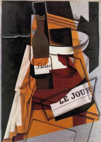

Las señoritas de Avignon (1907)
Pablo Picasso
Considerada la obra fundacional del Cubismo, rompe con la tradición al mostrar figuras fragmentadas en planos geométricos.
Considerada la obra fundacional del Cubismo, rompe con la tradición al mostrar figuras fragmentadas en planos geométricos.

Ejemplo del Cubismo Analítico donde las formas se fragmentan en múltiples planos y la paleta se reduce a tonos sobrios.

Ejemplo del Cubismo Sintético con formas simplificadas, equilibrio visual y colores más luminosos.
Adaptación latinoamericana del Cubismo, con geometría, ritmo, color y una mirada moderna de identidad local.